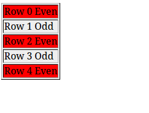
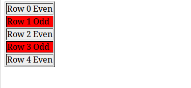
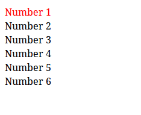
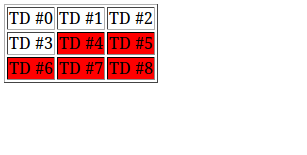
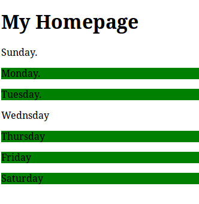

jQuery Basic Selectors
jQuery Basic Selectors
jQuery provides many selectors we can use on a webpage, in this chapter we will learn the basic selectors
jQuery :even Selector
jQuery even selector is used to select only the even elements on the webpage. Indexs are zero based index
Syntax
$("element:even")
Example
HTML
<body>
<table border="1">
<tr><td>Row 0 Even</td></tr>
<tr><td>Row 1 Odd</td></tr>
<tr><td>Row 2 Even </td></tr>
<tr><td>Row 3 Odd</td></tr>
<tr><td>Row 4 Even</td></tr>
</table>
</body>
See the below jquery even selector example, it will select all the even tr elements (0, 2, 4) and apply background-color:red color to the above HTML code
$( "tr:even" ).css( "background-color", "red" );
Output

Try It Now
jQuery :odd Selector
jQuery odd selector is used to select only the odd elements on the webpage. Indexes are zero based
Syntax
$( "tr:odd" )
Example:
HTML
<body>
<table border="1">
<tr><td>Row 0 Even</td></tr>
<tr><td>Row 1 Odd</td></tr>
<tr><td>Row 2 Even </td></tr>
<tr><td>Row 3 Odd</td></tr>
<tr><td>Row 4 Even</td></tr>
</table>
</body>
See the below jquery odd selector example, it will select all the odd tr elements (1, 3, 5) and apply background-color:red color to the above HTML code
$( "tr:odd" ).css( "background-color", "red" );Output

Try it Now
jQuery :eq Selector
jQuery :eq selector is used to select the element at a specific index within the matched set.
Imagine, if you have to style a single specific element out of hundrends or thousands of HTML elements in the webpage you might consider using the jQuery :eq selector
Syntax
$( ":eq(index)" )
Example
HTML
<body>
<table border="1">
<tr><td>One</td><td>Two</td><td>Three</td></tr>
<tr><td>Four</td><td>Five</td><td>Six</td></tr>
<tr><td>Seven</td><td>Eight</td><td>Nine</td></tr>
</table>
<body>
The below jquery :eq selector example will target the second td element from zero based index and style that td element color as green
$( "td:eq( 2 )" ).css( "color", "green" );
Output

Try It Now
jQuery :first Selector
jQuery :first selectorselects the first matched element in the given list of HTML elements.
The :first pseudo-class is equivalent to :eq( 0 )
Syntax
$(":first" )
Example
HTML
<body>
<table>
<tr><td>Number 1</td></tr>
<tr><td>Number 2</td></tr>
<tr><td>Number 3</td></tr>
<tr><td>Number 4</td></tr>
<tr><td>Number 5</td></tr>
<tr><td>Number 6</td></tr>
</table>
</body>
jQuery
$( "tr:first" ).css( "color", "red" );
In the above example, we have 7 tr elements. Using the above jquery :first selector we can target the first selector and apply the required styles
Output

Try It Now
jQuery :last Selector
jQuery :last selectorselects the last matched element in the given list of HTML elements.
Note: :last selector, selects a single element by filtering the current jQuery collection and matching the last element within it.
Syntax
$( ":last" )
Example
HTML
<body>
<table>
<tr><td>First </td></tr>
<tr><td>Middle </td></tr>
<tr><td>Last </td></tr>
</table>
<body>
jQuery
$( "tr:last" ).css({ backgroundColor: "green", fontWeight: "bolder" });
In tha above jQuery :last selector example, we have 3tr elements. Using the above jquery :last selector we can target the last tr element and apply the green color to the text
Output

Try It Now
jQuery :gt Selector
jQuery :gt selectoris used to select all elements which are greater than the given index.
When there are many similar HTML elements you can select specific element(s) which are greater than some specific index.
Syntax
$( ":gt(index)" )
Example
<body> <table border="1"> <tr><td>TD #0</td><td>TD #1</td><td>TD #2</td></tr> <tr><td>TD #3</td><td>TD #4</td><td>TD #5</td></tr> <tr><td>TD #6</td><td>TD #7</td><td>TD #8</td></tr> </table> </body>jQuery
$( "td:gt(3)" ).css( "backgroundColor", "red" );
In the above example jQuery :gt selector targets the specifictd element, which is greater than 3 Third td element.
Output

Try It Now
jQuery :lt Selector
jQuery :lt selectoris used to select all elements which are less than the given index.
Syntax
$( ":lt(index)" )
Example
<body>
<table border="1">
<tr><td>Zero</td><td>One</td><td>Two</td></tr>
<tr><td>Three</td><td>Four</td><td>Five</td></tr>
<tr><td>Six</td><td>Seven</td><td>Eight</td></tr>
</table>
</body>
$( "td:lt(5)" ).css( "backgroundColor", "green" );
The above example will select all the td elements which has the index as less than 5
Output

Try It Now
jQuery :not Selector
jQuery :not selectorselects all elements that do not match the given index. In other words, it selects all the elements except the mentioned element in the selector
Syntax
$( ":not(selector)" )
All selectors are accepted inside :not() selector, for example: :not(div a) and :not(div,a).
Example
HTML<body> <h1> My Homepage</h1> <p class="dont-select-me">Sunday.</p> <p>Monday.</p> <p>Tuesday.</p> <p class="dont-select-me">Wednsday</p> <p>Thursday</p> <p>Friday</p> <p>Saturday</p> </body>jQuery
$(document).ready(function(){
$("p:not(.dont-select-me)").css("background-color", "green");
});
The above jQuery :not selector selects all the elements and apply its background color as green except the elements which has a css class name calleddont-select-me. In our example Monday and Wednsday paragraphs contains p class="dont-select-me" class. So it will be ignored
Output

Try It Now
jQuery :focus Selector
jQuery :focus selectorselects HTMLelement if it is currently focused.
Syntax
$( ":focus" )
Example
<body> <div id="content"> <input tabIndex="1"> <input tabIndex="2"> <select tabIndex="3"> <option>select menu</option> </select> <div tabIndex="4"> This is a div </div> <p>When you click inside the form it changes it background color to red </div> </body>jQuery
$( "#content" ).delegate( "*", "focus blur", function() {
var elem = $( this );
setTimeout(function() {
elem.toggleClass( "focused", elem.is( ":focus" ) );
}, 0 );
});
The above example selects the currently focused element apply the css style to that element
Output
Try It Now
Learn other jQuery Selectors
jQuery SelectorsjQuery Child Selectors